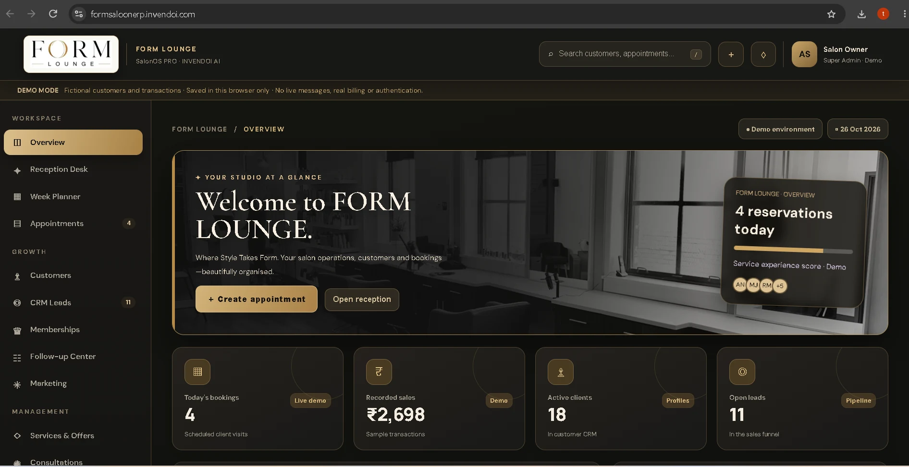
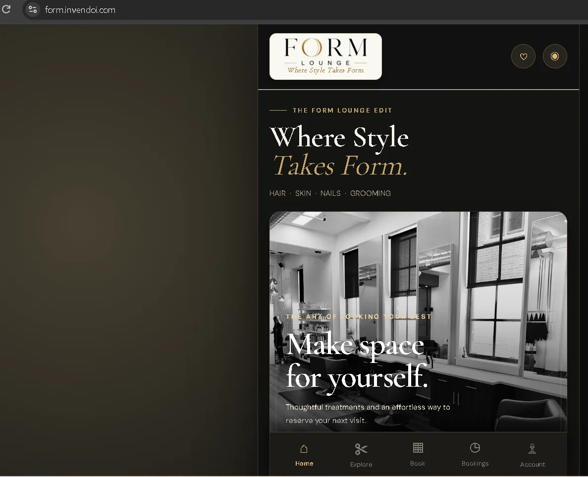
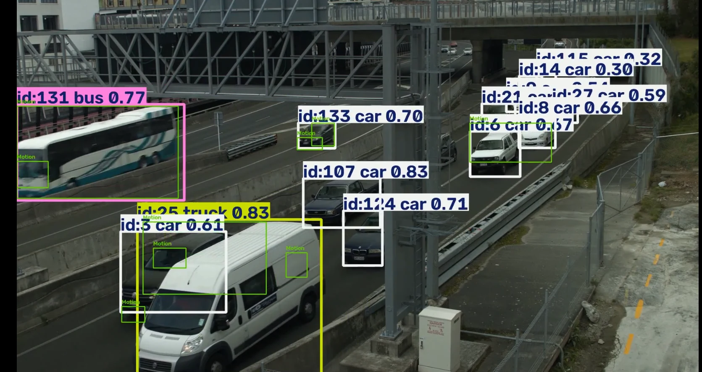
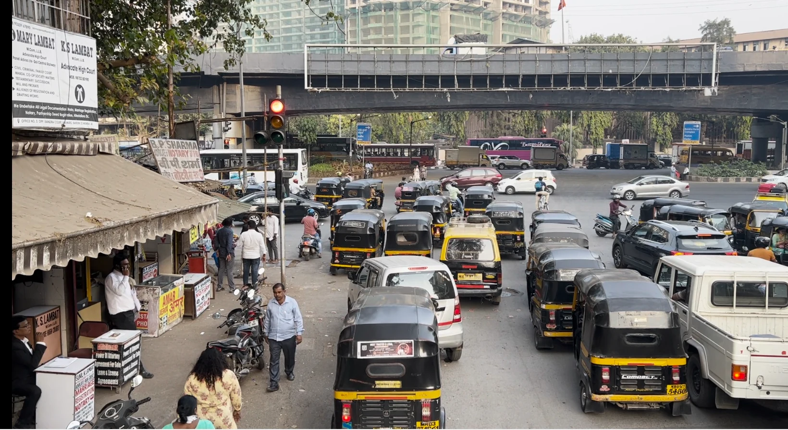
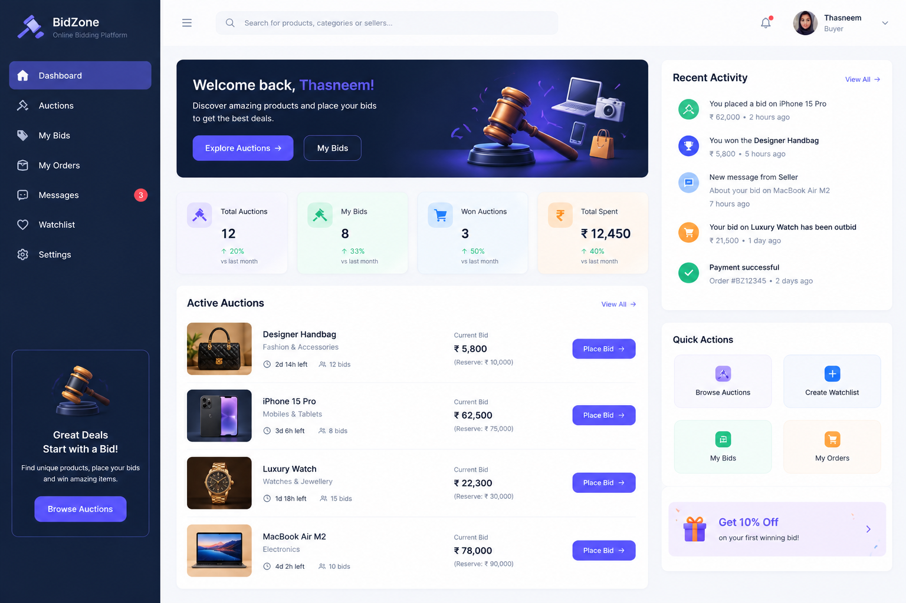
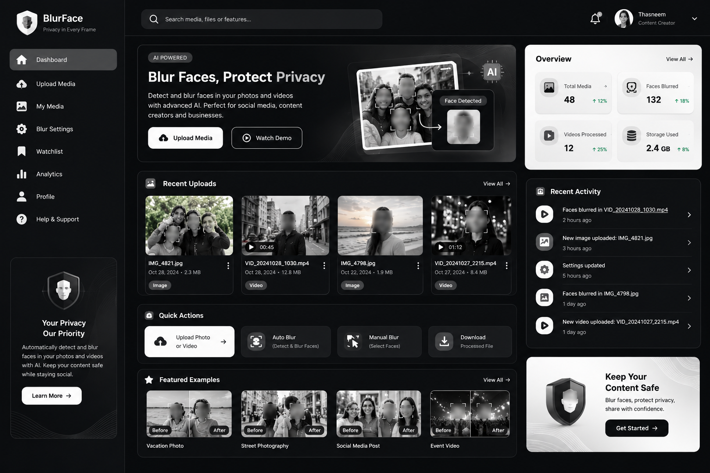
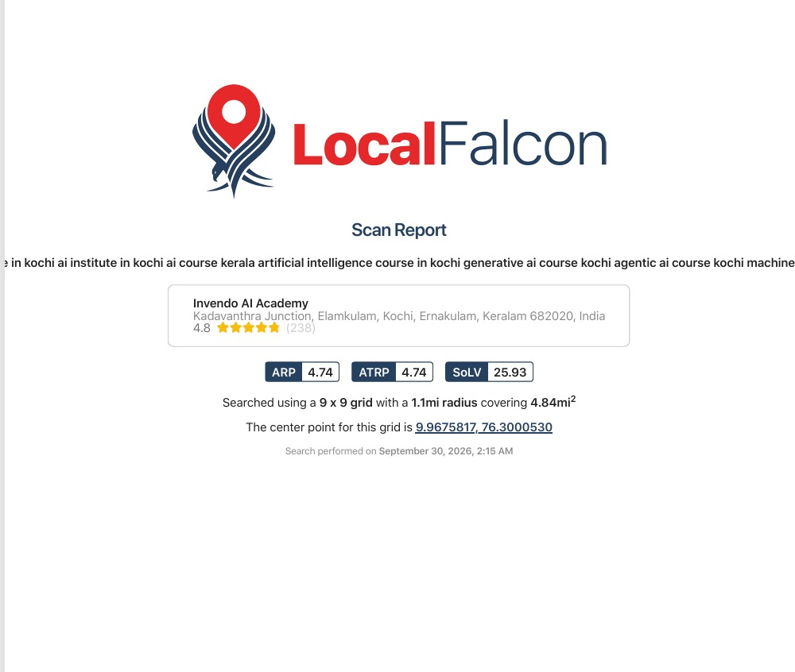
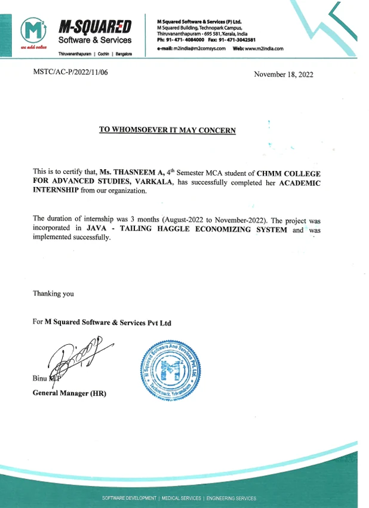
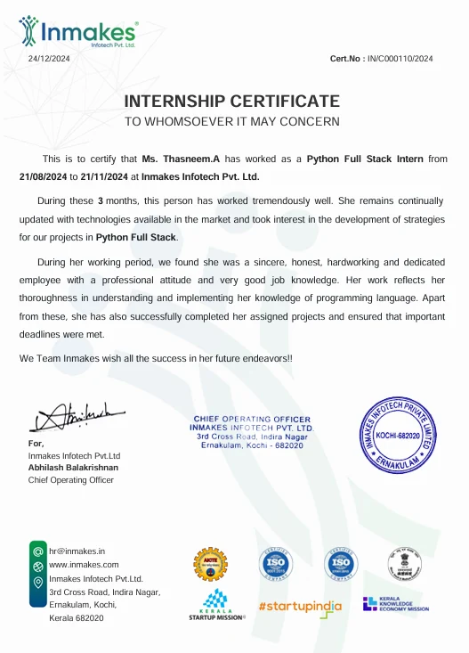
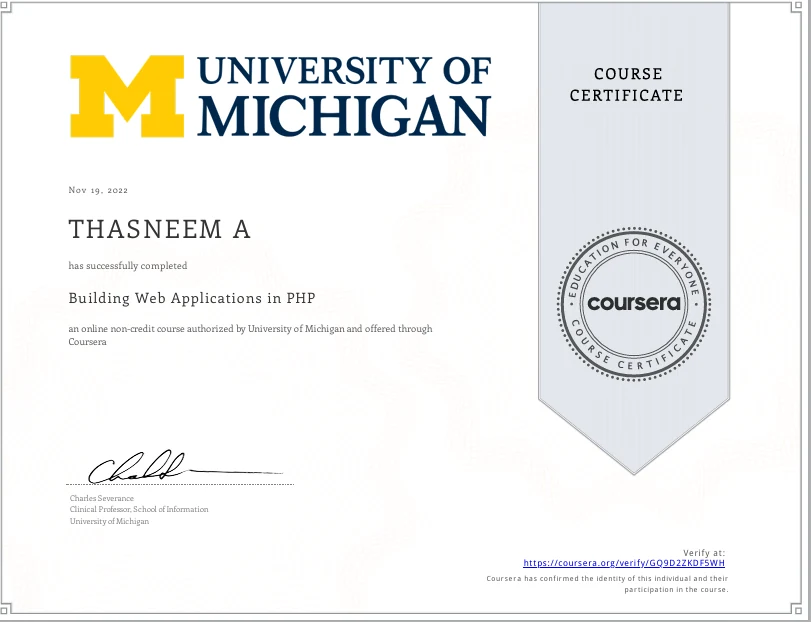

01 / CORE FOCUS
Off-page SEO
Authority-building research, backlink opportunities, competitor analysis, and the work that happens beyond a website.
I’m Thasneem A.— AI Engineer & Software Developer based in India. I build intelligent products with Python, and make them visible with SEO, AEO & GEO.
My work lives where visibility meets intelligence.
I’m Thasneem A., a software developer with a background in Python Full Stack Development, Artificial Intelligence, and Digital Marketing. My work spans responsive web applications, backend systems, AI-powered computer-vision projects, and search visibility.
In digital marketing, I work across off-page SEO, keyword research, on-page optimization, AEO, GEO, local search, and website performance analysis. I bring analytical thinking, problem-solving, debugging, and a continuous-learning mindset to each project.
My current focus is building a strong intersection between digital discoverability and intelligent technology.
Motivated and detail-oriented Software Developer with a background in Python Full Stack Development, Artificial Intelligence, and Digital Marketing. Proficient in Python, Django, React, JavaScript, HTML, CSS, RESTful APIs, and database management, with knowledge of developing responsive web applications and backend systems. Hands-on project experience in AI-powered CCTV surveillance, computer vision, object detection, motion detection, and object tracking using Python and OpenCV. Familiar with integrating AI technologies into practical applications to improve automation, monitoring, and system efficiency. Additionally, knowledgeable in Digital Marketing, SEO, AEO, GEO, keyword research, SEO content planning, on-page optimization, and website performance analysis. Possesses strong analytical thinking, problem-solving, and debugging skills, with an eagerness to learn new technologies, collaborate with development teams, and build scalable, efficient, and user-friendly software solutions.
“GOOD WORK— THASNEEM A. / WORKING PHILOSOPHY
DESERVES TO
BE FOUND.”
Three search disciplines, one idea: make information easier to discover, trust, and understand.
Authority-building research, backlink opportunities, competitor analysis, and the work that happens beyond a website.
Optimizing for discoverability across traditional search and answer-focused experiences.
Exploring how structured information, clarity, and credible sources matter in AI-mediated discovery.
Skills and tools listed in the supplied resume. Practical experience varies by technology and project.
Explore digital marketing practice, live salon products, and AI/software projects. Screenshots are mapped to the projects they accompany in your supplied portfolio document.

Off-page SEO focus, keyword research, local search, on-page optimization, AEO and GEO.

Form & Launch — a centralized salon management platform for day-to-day business operations.

The Form salon website shown in the supplied project documentation.

Vehicle detection and tracking with YOLO11, ByteTrack, OpenCV and a Flask interface.

Object tracking, restricted-zone intrusion, line-crossing, loitering and event evidence.

Tailing platform with customer/tailing roles, custom orders and dynamic price negotiation.

Media-sharing concept with automatic face detection and blurring before sharing or storage.
Digital marketing practice alongside software development, Python, and computer vision.
Invendo AI Academy

SUPPLIED SEO / LOCAL SEARCH REPORTINMAKES INFOTECH Pvt. Ltd.
M Squared Software & Services Pvt. Ltd. · Technopark

EXPERIENCE LETTERCoursework / independent application
Building on AI Engineering learning through practical projects involving computer vision, object detection, tracking, and video analytics. A course provider or completion date was not specified in the supplied resume.
University of Kerala · CHMM College
CGPA 7.6University of Kerala · CHMM College
CGPA 7.0Continuous learning across software development, AI, and digital marketing.
Certificate and experience-letter previews below come from your portfolio document. Two additional Drive documents are linked separately because their titles could not be confirmed from the supplied files.

Python Full Stack Developer internship certificate shown in the portfolio document.
Experience letter included in the supplied portfolio documentation.

University of Michigan · Coursera certificate.
MHRD, Government of India. Certificate named in the resume; a certificate image was not included in the supplied document.
Open the two Drive files supplied earlier. Their exact document titles have not been verified from the available source material.
If you’re working on something in search, digital marketing, software development, or intelligent technology, I’d love to hear from you.
EMAIL ME↗Kollam, Kerala, India · thasneemsamad0@gmail.com